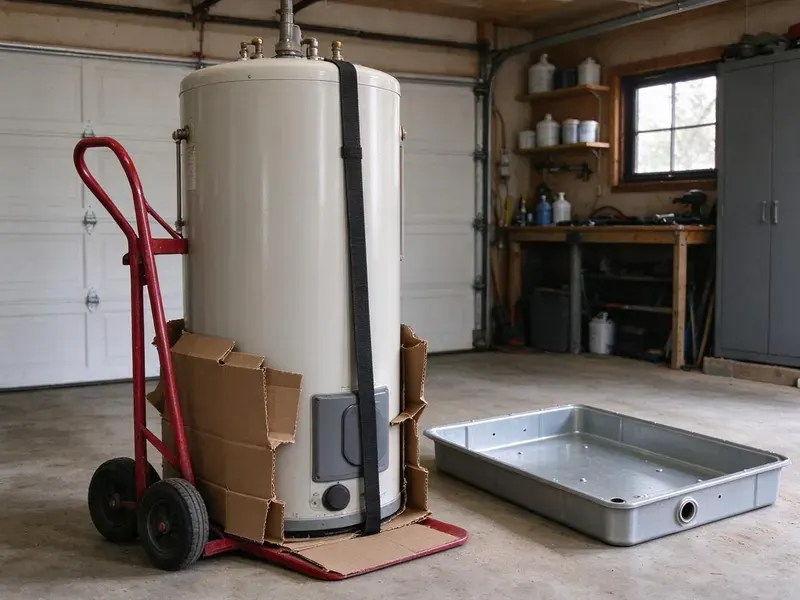
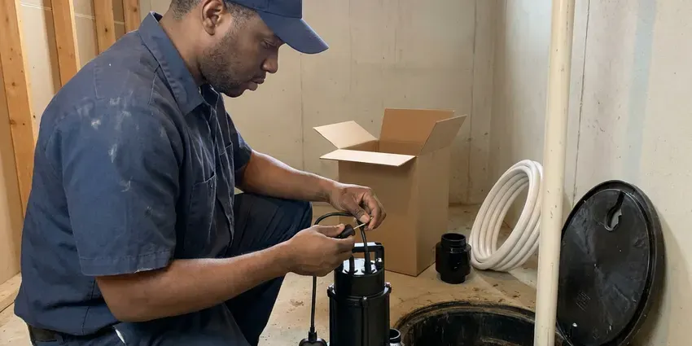
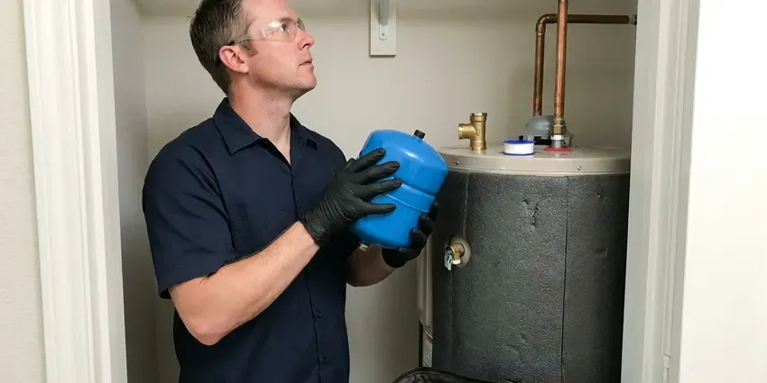

Water Heater Installation in Casper, WY
Old tank leaking in Casper, WY? JKV Plumbing swaps it out and hauls it away.
- Old Tank Removal Included
- Same-Day Installs
- Licensed, Insured Plumbers
- Labor Warranty

Water Heater Installation in Casper, WY
We size it, install it and take the old one away.
Water Heater Replacement and New Installs in Casper, WY
JKV Plumbing works on every part of the install, from choosing the model to the final leak check. Tank heaters and tankless units differ on gas line size, venting and electrical load, so we confirm your home can support the one you want before ordering it. That prevents surprises.
Our expertise includes:
- Heat pump and tankless units
- Code venting and expansion tanks
- Expansion tanks and drain pans

Additional Plumbing Installation Services in Casper, WY
We install water heaters, pumps, lines, and fixtures across Casper, WY with careful, permitted work that passes inspection the first time.


Sump Pump Installation in Casper


Customers
Why Choose JKV Plumbing for Water Heater Installation in Casper, WY?
We help you choose the right size and type. Then we install it cleanly, test the burner or elements and check every joint for leaks before we leave. Old tank goes with us.
- Clear Pricing, You get a written estimate before we start.
- Local Experience, We know the water conditions and common plumbing setups in Wyoming, so we recommend units that hold up.
- Right-Sized Units, We size by people in the house and peak use, plus fuel type.
Citywide Coverage
Single-family homes, townhomes and condos throughout Casper are all regular work for us. Garage, closet or attic, we bring the right tools.
Experienced Team
The JKV Plumbing crew handles the sizing, the recommendation and the install. One crew sees the job through.
Safety-First Approach
Before we leave, JKV Plumbing tests every connection on the new heater. We check for water leaks, gas leaks and proper exhaust.
Trusted Certified Casper Plumbing Services Professionals
At JKV Plumbing, we are proud to offer certified plumbing services throughout Casper, WY. Those papers on the wall mean something. Our plumbers hold recognized industry credentials, and they follow strict safety and quality rules on every repair, installation and maintenance call we run.
Call Us Now PHCC Plumbing Contractor Recognition
PHCC Plumbing Contractor Recognition Better Business Bureau (BBB) Accreditation
Better Business Bureau (BBB) Accreditation Angi Certified Pro
Angi Certified Pro ISO 9001 Quality Management Certification
ISO 9001 Quality Management CertificationWater Heater Installs in Casper, WY
Emergency Water Heater Replacement in Casper, WY
Water on the garage floor and no hot water usually means the tank has rusted through. First step is to close the cold water valve above the tank and shut off the gas or the breaker, which stops the leak from getting worse. Common tanks ride on our trucks. Same-day replacement is normal.

Gas Water Heater Replacement in Casper
Swapping a gas water heater comes down to three connections done right, the gas, the vent and the water. We install a new flex connector with a sediment trap, check vent pitch and draft and test every joint with a gas leak detector. Carbon monoxide is the risk. All work follows local code.
Gas Tank Water Heater Installation in Casper
A gas tank is the most common water heater we install, in 40, 50 and 75 gallon sizes. Each one gets a new gas connector, a sediment trap and a shutoff valve, plus a vent connector pitched up toward the flue at a quarter inch per foot. We test draft before leaving. Gas suits busy households.
Tankless Water Heater Installation in Casper, WY
Going tankless means the heater fires only when a tap opens, and it never runs out. Gas tankless models usually need a bigger gas line than the old tank had, plus a dedicated vent run through the wall or roof. Upfront cost is higher. We confirm your meter and line can handle it first.
Traditional Tank Water Heater Installation in Casper
Tank heaters still heat most homes' water, holding 40 to 75 gallons at temperature until you need it. Sizing is based on the first-hour rating on the yellow label, which tells you how much hot water the tank can deliver during a busy hour. Gas or electric both work. We connect the fuel, set the vent and haul the old tank away.
Major Brand Water Heater Installation in Casper, WY
Rheem, Bradford White, A.O. Smith and Noritz are the brands we install most. Every manufacturer sets its own clearance, venting and relief valve rules, and following them is what keeps the warranty good. Our crews know each one. We help you compare models on warranty length and recovery rate.
Water Heater Expansion Tank Installation in Casper
Closed plumbing systems trap the extra volume water gains when it heats. Plumbing licensing and code adoption are largely handled at the local level in Wyoming, so permit rules vary from one town or county to the next. A small expansion tank on the cold line absorbs that extra volume, which keeps the relief valve from weeping and saves wear on faucets and fittings. We pre-charge it to your house pressure. It mounts on the cold inlet.

Brand-Specific Water Heater Installation in Casper
Each manufacturer publishes its own install rules, and they are not identical. Rheem, AO Smith, Bradford White and Navien each spell out clearances, vent lengths and relief valve placement, and a warranty claim can be denied if those were ignored. We follow them exactly. That protects your coverage.
Water Heater Installation Near Me in Casper, WY
Picking a local contractor means the plumber knows Casper plumbing and permits. We know what local inspectors look for on a water heater final, which keeps the job moving. Neighbors refer us often.
Our crews know the water and the home layouts around here. We suggest models that suit your water and your space, then explain how to flush the tank and when to check the anode. You get care advice too.
JKV Plumbing at a Glance
- Licensed and insured plumbers serving Casper, WY
- Same-day appointments and 24/7 emergency response
- Clear written estimates, no hidden fees
- 4.9-star rated by 782+ Wyoming customers
Casper Map
Casper Information
- Population
- 58,720
- Area codes
- 307/406/435
- Service area
- Casper and communities within 40 miles
- Nearby
- Douglas, Rawlins, Riverton, Gillette
A water heater runs every day of the year in Casper, WY homes, so a correct size and a clean install pay off.
Talk to a Plumber
Reach out to JKV Plumbing for honest, reliable plumbing from people who know the trade in Casper, WY.
Our Specialized Plumbing Services in Casper, WY
At JKV Plumbing, you get every kind of plumbing service from one company across Casper, WY. From leak detection to full system installs, our team works fast and charges fair prices on homes and commercial properties alike. Here are the core services we offer:


Our Water Heater Installation Steps in Casper, WY
We follow the same steps on every install so nothing gets missed.
Request a Quote
Call us at (307) 393-4049 to talk about your water heater and schedule a visit. You get a written quote.
Site Visit
Our plumber checks your Casper setup, goes over your options and helps you pick a unit.
Installation
We remove the old unit and install the new one, with every connection, vent and safety check done.
Frequently Asked Questions About Water Heater Installation in Casper
Most installs in Casper, WY land between $1,200 and $3,500. Tank versus tankless, size, gas versus electric and any needed upgrades all move the number. Hard access costs more. The price is set before we begin.
Tank water heaters last about 8 to 12 years, though hard water can shorten that. Flushing and anode checks extend life.
Household size and peak demand decide the size. Two to four people usually do fine with a 40 or 50 gallon tank, while bigger families often need 60 to 80 gallons or a tankless unit sized by flow rate. Tankless is sized by GPM.
An expansion tank absorbs the extra pressure created as water heats. Closed systems usually need one by code.
The job involves gas, venting, electrical and pressure safety. A licensed plumber installs it safely and protects your warranty.
Popping or rumbling, rust-colored water, leaks or an age past ten years are the common clues. One of those alone is reason enough to have it checked.
Most jurisdictions require a permit for replacement. We pull permits when required and make sure the install meets code.
Rheem, Bradford White, A.O. Smith and Noritz are our most common installs. We carry gas and electric models in several sizes and efficiency levels, and we can order most others within a day or two. You pick with our help.
What Our Customers Say About Our Plumbing Experts

Carlos V.
Our house still had galvanized pipe, and upstairs the shower was a trickle. The crew repiped everything in PEX over three days and patched every drywall hole before they left. The pressure difference is night and day.
Repiping · Riverton, WY
Angela D.
Our sump pump quit during a storm and the water was an inch from the basement carpet. JKV Plumbing put in a new pump with a battery backup that same evening. We have had two heavy rains since. It kicked on both times.
Sump Pump · Gillette, WY
Kevin O.
Before buying our house I paid for a sewer camera inspection. JKV Plumbing found a belly in the line that held standing water about forty feet from the cleanout. We used the video to get the sellers to fix it before closing.
Sewer Camera Inspection · Torrington, WYRobert G.
The camera showed a full break in our clay sewer line near the street. JKV Plumbing replaced it with a trenchless pipe burst, so the only digging was two small pits in the yard. They let us watch the footage before and after.
Sewer Line Replacement · Douglas, WY
Mark T.
The floor drain in our office break room backed up every few weeks. The plumber ran a cable, then put a camera down and found roots at a joint about thirty feet out. Seeing it on the screen made the decision easy.
Drain Cleaning · Douglas, WYGreg S.
I manage a small strip center with six tenants. JKV Plumbing handles our annual backflow testing and fixed a recurring clog in the shared sewer line that had been backing into the nail salon. Their reports come in clean and on time.
Commercial Plumbing · Casper, WY